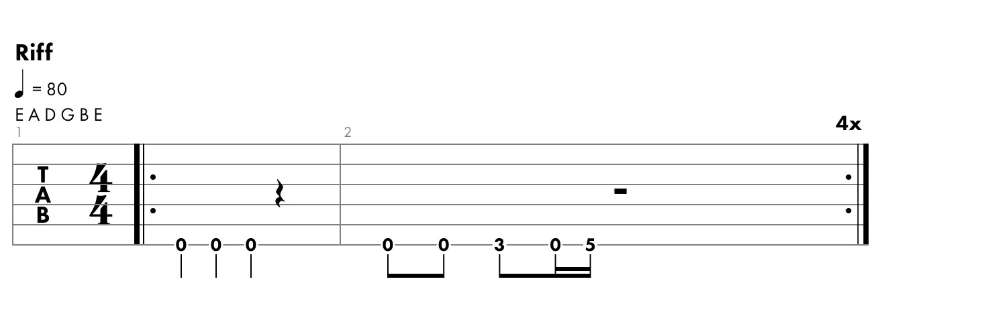

Another One Bites the Dust
Riff 
Author: Queen
Rylics:
Let’s go
Steve walks warily down the street
With his brim pulled way down low
Ain’t no sound but the sound of his feet
Machine guns ready to go
Are you ready hey are you ready for this?
Are you hanging on the edge of your seat?
Out of the doorway the bullets rip
To the sound of the beat yeah
Another one bites the dust
Another one bites the dust
And another one gone and another one gone
Another one bites the dust
Hey I’m gonna get you too
Another one bites the dust
How do you think I’m going to get along
Without you when you’re gone
You took me for everything that I had
And kicked me out on my own
Are you happy are you satisfied?
How long can you stand the heat
Out of the doorway the bullets rip
To the sound of the beat look out
Another one bites the dust
Another one bites the dust
And another one gone and another one gone
Another one bites the dust
Hey I’m gonna get you too
Another one bites the dust
Hey
Oh take it - Bite the dust bite the dust
Hey Another one bites the dust
Another one bites the dust ow
Another one bites the dust he he
Another one bites the dust haaaa
Ooh shoot out
There are plenty of ways that you can hurt a man
And bring him to the ground
You can beat him
You can cheat him
You can treat him bad and leave him
When he’s down
But I’m ready yes I’m ready for you
I’m standing on my own two feet
Out of the doorway the bullets rip
Repeating to the sound of the beat
Another one bites the dust
Another one bites the dust
And another one gone and another one gone
Another one bites the dust yeah
Hey I’m gonna get you too
Another one bites the dust
Shoot out